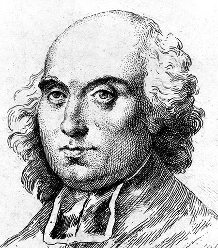
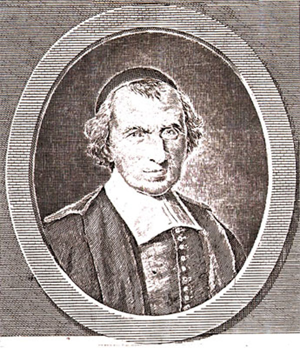

Жан Мелье — французский философ-материалист, атеист, утопический коммунист, автор известного сочинения «Завещание», опубликованного в трех томах в 1864 г. в Амстердаме. Родился в зажиточной семье сельского ткача. В 23 года Жан Мелье получил сан священника
и в течение 40 лет, до самой смерти в качестве духовного наставника обслуживал приход в деревне Этрепинье. Очень хорошо осведомленный о жизни крестьян, он полностью разделял все то, чем жили, о чем думали, к чему стремились его прихожане.
 Считая непримиримыми противоречия между народом и «сильными мира сего», Мелье отвергал мысль о «просвещенном государе», служащем обществу. Обличая тиранические порядка абсолютистской
Франции, и видя безысходность положения крестьян, угнетаемых дворянами и духовенством, Мелье призывал народ к революции.
В «Завещании» он набросал контуры идеального коммунистического общества, в котором все люди одной местности
объединяются в единую семью-общину с общим владением всеми благами, где все трудятся и любят друг друга, как братья. Тиранические порядки результат того, что у народа нет ясности сознания тяжести своего положения, его причин и своей
силы. Народ обманут и подавлен предрассудками, главную роль среди которых играет религия, которую Мелье подверг разносторонней критике. Он учил, что народ, для которого правители должны быть слугами, установит новый строй с помощью
просвещения, объединения, путем освободительной борьбы (эта революционность отличала воззрения Мелье от идей других утопистов XVIII в.).
 Рукопись «Завещание» Мелье предпослал надписью: «Я видел и познал ошибки, заблуждения, бредни, безумства и злодеяния людские. Я почувствовал к ним ненависть и отвращение. Я не осмелился
сказать об этомпри жизни, но я скажу об этом по крайней мере умирая и после смерти. Пусть знают, что я составляю и пишу настоящий труд, чтобы он мог служить свидетельством истины для всех тех, кто его увидит и прочтет, если им будет
угодно»
Сочинение Ж. Мелье полностью не публиковалось целых два столетия. В XVIII в. Вольтер составил краткое «Извлечение» из труда Мелье и бесплатно разослал по многим адресам. В 1882 г. А. Гольбах опубликовал книгу «Здравый смысл кюре
Мелье», которая по приговору парижского парламента была сожжена.